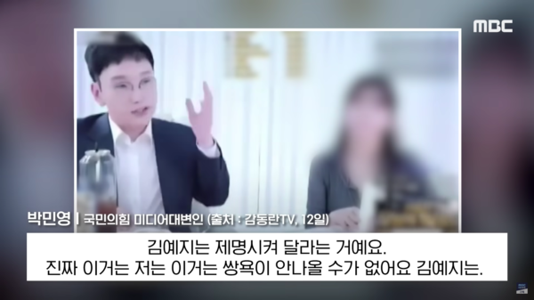
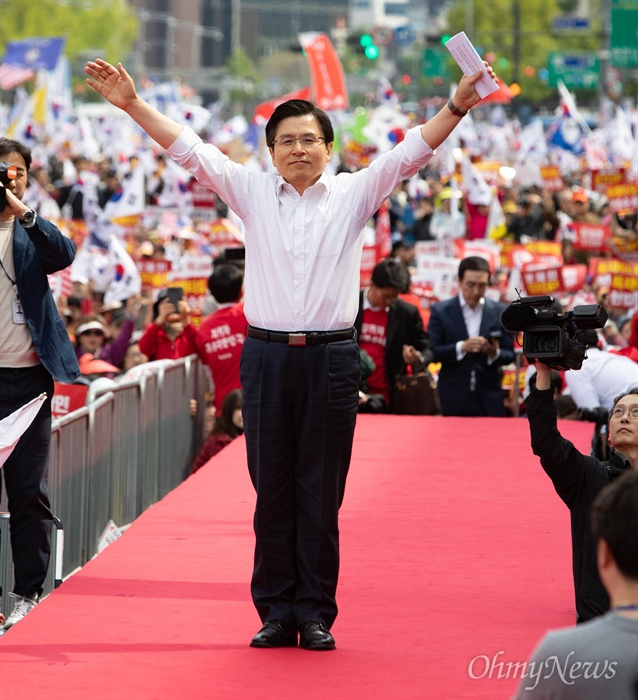
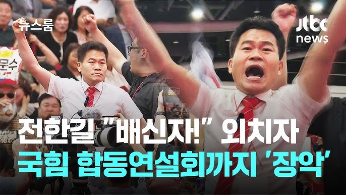
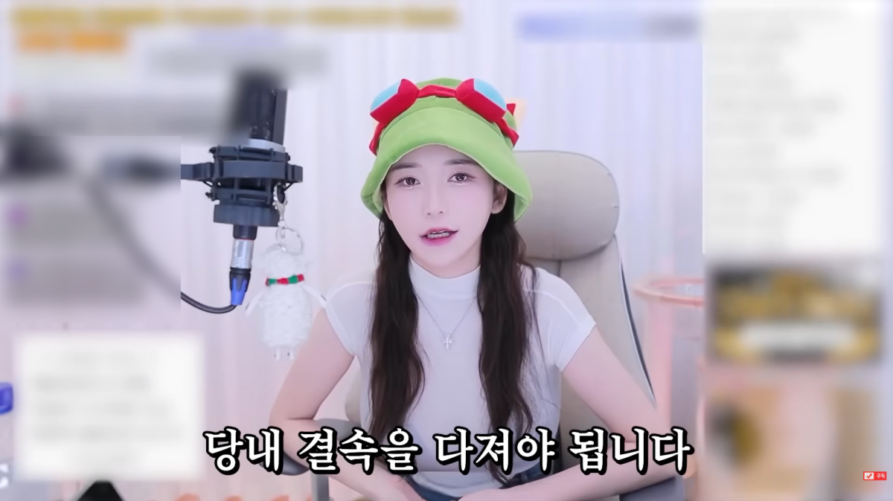
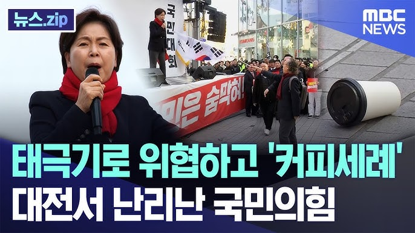

2025-12-07 국민의힘X유튜버의O
 2025년 11월 12일 박민영 국민의힘 미디어대변인과 인터넷 방송인 김소은이 개인방송에서 김예지 국민의힘 국회의원을 향해서 막말을 했다. 벌써 오늘의 기준으로 2주가 넘어간다. 당시 발언을 살펴보자,
"장애인이 너무 많이 할당을 해서 저는 문제라고 봐요. 적당히 해야 돼요, 저는 좀 전문가를 했으면 좋겠어요, 그런데 저는 죄송하지만 장애인이라고 저는 그런데 본인이 장애인이라 주체성을 가지는 게 아니라 배려 받는 걸 당연하게 생각하는 것 같아요"
"도태우 변호사도 사실 5.18 관련해서 뭐 모욕을 한 것도 아니에요. 그냥 자기 의견을 게재를 한 거예요. 그럴 수 있잖아요"
여기까지는 같은 부류끼리 하는 잡소리로 생각할 수가 있다. 요컨대 국민의힘이 일부 의원들이 5.18 민주화 운동에 말도 안되는 5.18 개입설을 옹호하는 것이 한두번이 아니기 때문이다. 또한 공천시스템에서 일부 불만을 가질 수는 있다. 하지만 그 뒤에 김소은이 "아 제가 진짜 김예지는 씨발 진짜 장애인인 걸 다행으로 알아야 돼요. 내가 더 말을 안 하는 거야. 두 눈 똑바로 보였으면 진짜 어디까지 욕을 했을지 몰라요. 지가 장애인인 걸 천운으로 알아야 돼. 장애인이고 계집이니깐. 우리가 이만큼만 하는 거지. 이년이. 장애 없는 남자였으면 이 새끼는 뒤졌어. 아주 오체분시가 됐을 거라고. 설사똥 같은 년 진짜" 라고 말했다. 박민영 대변인은 그걸 보고 낄낄 거리고 웃는 모습을 보였다. 와 진짜... 뭐 이런 인간들 다 있지?
정치인이 유튜버들과 함께 어울려서 미디어에 진출하는 것은 나쁜 것이 아니다. 특히 기존의 레거시 미디어는 문제점과 한계가 명확하게 존재한다. 레거시 미디어에 피로와 염증을 느낀 기존의 소비자들은 뉴 미디어(주로 유튜브)로 이동하는 것은 자연스러운 것이다. 하지만 뉴 미디어 역시 문제점과 한계가 명확하게 존재한다. 뉴 미디어의 가장 큰 문제점과 한계는 크로스 체킹이 매우 부실하다는 것이다. 사례를 보자 황교안 전 국무총리가 미래통합당 시절 유튜버들과 함께 연대하여 크로스 체킹 없이 부정선거 의혹을 뉴 미디어를 지속적으로 살포했다. 이들이 만든 단체 이름도 웃기다. 부방대다. 부정선거부패방지대. 웃기지도 않는다.
자신의 철학과 이념을 건강하게 만들어서 정당에 입당하여 정치를 하려는 것은 나쁜 것이 아니다. 하지만 극단적인 이념과 철학으로 몸집을 키워 정치에 입문을 하는 것은 나쁜 것이다. 또 사례를 보자 유튜버인지 언론사 사장인지 뭔지 모를 전한길은 지난 국민의힘 차기 지도부 선출을 위해서 대구. 경북 합동 연설회에서 김근식 최고위원 후보에게 "배신자" 라고 외치도록 지지자들을 선동했다. 당시 송언석 국민의힘 비대위원장은 전한길을 국민의힘 전당대회 출입 금지 조치를 내렸다.
김예지 의원에게 막말을 했던 김소은은 12월 1일 기준으로 국민의힘에 입당신청을 했다. 뉴스를 확인 해보니 "당원을 가입하는데 5분 밖에 걸리지 않는다" 라고 언급하면서 "프락치 새끼(한동훈계)들 다 쳐내려면은" 뭐 이런 말을 했다고 한다. 그러면서 "당내 결속을 다져야 됩니다" 이런 말을 했나보다. 결속을 다지면서 자당 국회의원을 향해서 씨발, 진짜 장애인 걸 다행으로 알아야 돼요, 이 년이, 설사똥 같은 년 진짜, 뭐 이런 말을 하나?
윤석열 대통령이 지난해 12월 3일에 비상계엄을 선포했다. 크로스 체킹도 되지 않은 유튜버들의 의견을 믿고 "부정선거를 밝히겠다." 라는 망상 속에서 스스로에게 비상계엄이라는 자충수를 놔 탄핵안이 가결되어 파면되었다. 윤석열 대통령은 전한길에게 "하나님이 보내 준 선물" 이라고 옥중 편지를 보냈다. 그 사이 국민의힘은 극우세력과 연대하자는 친윤계와 (내년 지방선거 전광훈의 자유통일당, 황교안의 자유와 혁신, 조원진의 우리공화당과 합당 내지 연대 이야기가 있다) 과 극우세력과 결별하고 비상계엄을 선포한 윤석열과 절연해야 주장하는 친한동훈계, 비윤계가 싸우고 있다. 당내 건강한 경쟁은 얼마든지 해도 좋다. 하지만 비상계엄은 엄연히 잘못된 것이고, (옳다- 그르다-의 문제가 아니라. 헌법과 계엄법과 국회법을 어긴 것이다), 극우 유튜버들의 주장은 대부분이 크로스 체킹도 되지 않는 허위주장이다. 지금 국민의힘이 살아날 유일한 방법은 윤석열 대통령을 지지하는 극우세력과 결별하고, 비상계엄이 잘못된 것이라고 사과하고, 보수의 가치인 헌법과 법치를 지키기 위해서 노력해야 한다.